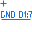

Contents=>Modes=>Schematic special modes=>Inserting or editing a text-based netlist
Toolbar:
Menu: Schematic Sheet|Text-based netlist, insert and edit
Cursor:

Used to insert or edit a text-based netlist
1. Set the attributes of the text representation of the list on the schematic
2. Specify the placement point of the list
3. In the dialog, create a list of pins connected to the selected net
The net name attributes are set using the text property panel.
"Smart mode" is not available.